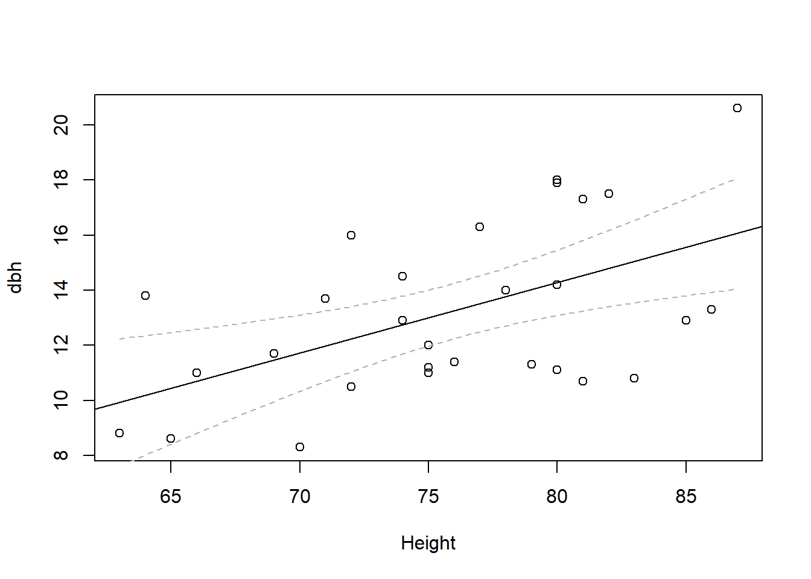
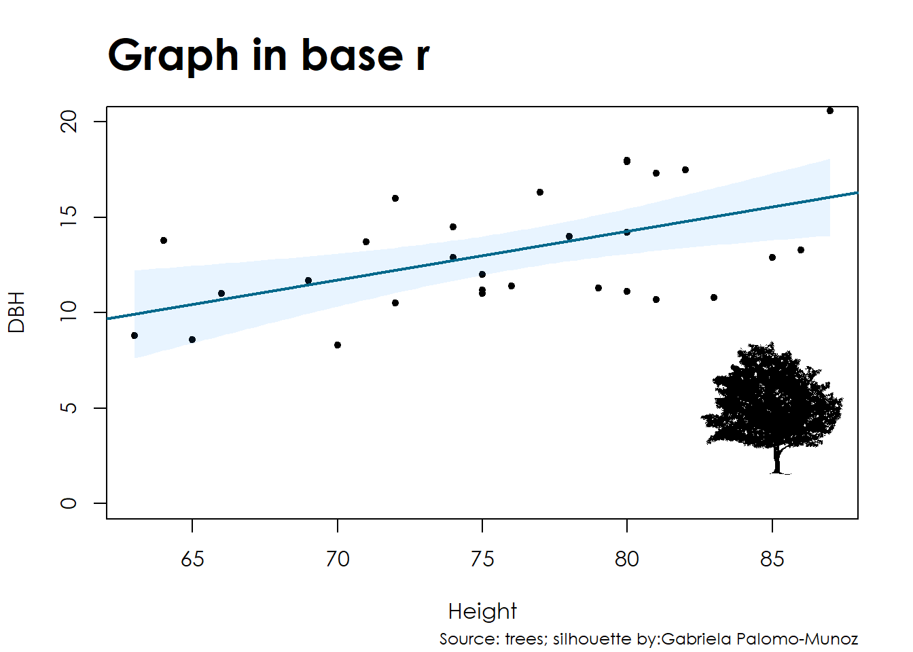

Placing silhouettes in base r plots using rphylopic
baser
rphylopic
silhouettes
Author
Gabriela Palomo-Munoz
Published
April 9, 2023
The rphylopic package
I explained a little of what phylopic and the rphylopic package are here. I wanted to continue this series with explaining how to use this versatile package but this time in base r.
Basic plot in base r
We will use again the tree dataset and plot a simple linear model.
# Let's call the data trees available in the dataset packagedata(trees)## Let's see the names of the variablesnames(trees)
[1] "Girth" "Height" "Volume"
## Let's rename the variable 'girth' to 'dbh' ## which stands for diameter at breast heightnames(trees) <-c('dbh', 'Height', 'Volume')## Let's check that it worked names(trees)
[1] "dbh" "Height" "Volume"
## Let's do the model firstm <-lm(dbh ~ Height, data = trees)## We have to predict some values to estimate the confidence intervalsnd <-seq(min(trees$Height), max(trees$Height), length.out=100)pred <-predict(m, newdata =data.frame(Height=nd), interval ='confidence')## Let's make a new data frame with our x, predicted y, and conf.int.nd <-data.frame(cbind(nd, pred))## Now the basic scatter plot plot(dbh ~ Height, data = trees)## Now let's add the fitted line from the lm modelabline(m)## Let's add some lines for our confidence intervals lines(nd$nd, nd$lwr, lty ='dashed', col ='gray70')lines(nd$nd, nd$upr, lty ='dashed', col ='gray70')

Customizing the base plot
Now that we have the basic plot, let’s customize it a little bit.
## Now the basic scatter plot plot(dbh ~ Height, data = trees,xlab ='Height', ylab ='DBH',font.lab =14, # x and y labels Using font 14 which is font.axis =14,ylim=c(0,20),pch =20)title(main ="Graph in base r",adj =0,font.main =15, # main title font 14 which is in boldcex.main =2) # font size of main title)title(sub ="Source: trees",font.sub =14,cex.sub =0.75,adj =1,)## I want shaded confidence intervals so for that we will use ## the function polygon()polygon(c(nd$nd, rev(nd$nd)),c(nd$lwr,rev(nd$upr)),col=adjustcolor('dodgerblue', alpha=0.1),border=NA)## Now let's add the fitted line from the lm modelabline(m, col ="#00688B", lwd =2)
Now let’s add a silhouette to this plot
To add a silhouette to a base plot you can do it three ways using the add_phylopic_base() function:
by calling the uuid directly: add_phylopic_base(uuid=uuid). Remember that you can always check the uuid for any silhouette by first running the function get_uuid(name = ‘genus species’).
by calling the species name: add_phylopic_base(name=‘genus species’), or
by loading a saved image in your working directory: add_phylopic_base(img=img)
Visualize silhouettes in the viewer
If you are using RStudio, then you can visualize the silhouettes for any species -or whatever taxonomic category- in the viewer. This is especially useful for species that have multiple silhouettes.
pick_phylopic(name = ‘Canis lupus’)
And type 1 in the console to change to the following silhouettes.
Once you picked a specific silhouette, then you can do the following which will save the uuid to ‘sil’.
sil <- pick_phylopic(name = ‘Canis lupus’, n=1)
## First we load the rphylopic package # install.packages('rphylopic')library(rphylopic)
You are using rphylopic v.1.3.0. Please remember to credit PhyloPic contributors (hint: `get_attribution()`) and cite rphylopic in your work (hint: `citation("rphylopic")`).
## Then we make the plot ## Now the basic scatter plot plot(dbh ~ Height, data = trees,xlab ='Height', ylab ='DBH',font.lab =14, # x and y labels Using font 14 which I think is Century Gothic. font.axis =14,ylim=c(0,20),pch =20)title(main ="Graph in base r",adj =0,font.main =15, # main title font family 15 is 14 in boldcex.main =2) # font size of main title)title(sub ="Source: trees",font.sub =14,cex.sub =0.75,adj =1,)## I want shaded confidence intervals so for that we will use ## the function polygon()polygon(c(nd$nd, rev(nd$nd)),c(nd$lwr,rev(nd$upr)),col=adjustcolor('dodgerblue', alpha=0.1),border=NA)## Now let's add the fitted line from the lm modelabline(m, col ="#00688B", lwd =2)## Now we add the silhouette! add_phylopic_base(name ='Cornus florida', x =85, y =5, ysize =7) # This is in the same scale as your y-axis
Warning: You've used the `name` argument. You may want to use `verbose = TRUE`
to get attribution information for the silhouette(s).
The key thing to keep in mind is that what guides the position and size of the silhouette inside the plot is the scale you are using in that plot. In this case, the size I chose for the silhouette ysize=7 is in relation to the y-axis scale, which in this case is 7 units in y-axis. The position corresponds with the x- and y-axis coordinates. See how the center of the silhouette is at x=85 and y=5.
What if you want the silhouette outside the plot
Just try negative values for x and y. That will help you position it outside the plot area, for example next to the legend. For example, try the plot above but using x=85 and y = -5
Don’t forget the attribution!
uuid <-get_uuid(name ="Cornus florida")# Get attribution data for uuidat <-get_attribution(uuid = uuid)at
## First we load the rphylopic package # install.packages('rphylopic')library(rphylopic)## Then we make the plot ## Now the basic scatter plot plot(dbh ~ Height, data = trees,xlab ='Height', ylab ='DBH',font.lab =14, # x and y labels Using font 14 which is font.axis =14,ylim=c(0,20),pch =20)title(main ="Graph in base r",adj =0,font.main =15, # main title font 14 which is in boldcex.main =2) # font size of main title)title(sub =paste0("Source: trees", "; silhouette by:" , at$contributor), # at is the attribution of the silhouette font.sub =14,cex.sub =0.75,adj =1,)## I want shaded confidence intervals so for that we will use ## the function polygon()polygon(c(nd$nd, rev(nd$nd)),c(nd$lwr,rev(nd$upr)),col=adjustcolor('dodgerblue', alpha=0.1),border=NA)## Now let's add the fitted line from the lm modelabline(m, col ="#00688B", lwd =2)## Now we add the silhouette! add_phylopic_base(name ='Cornus florida', x =85, y =5, ysize =7) # This is in the same scale as your y-axis
Warning: You've used the `name` argument. You may want to use `verbose = TRUE`
to get attribution information for the silhouette(s).

Cite rphylopic in your manuscript or work:
citation('rphylopic')
To cite rphylopic in publications, use the following citation:
Gearty, W. and Jones, L.A. 2023. rphylopic: An R package for
fetching, transforming, and visualising PhyloPic silhouettes. Methods
in Ecology and Evolution, 14(11), 2700-2708. doi:
10.1111/2041-210X.14221.
A BibTeX entry for LaTeX users is
@Article{,
title = {rphylopic: An R package for fetching, transforming, and visualising PhyloPic silhouettes},
author = {William Gearty and Lewis A. Jones},
year = {2023},
volume = {14},
number = {11},
pages = {2700-2708},
journal = {Methods in Ecology and Evolution},
doi = {10.1111/2041-210X.14221},
}
And that’s it, that’s all I have for you. If you have any questions don’t hesitate to contact me.